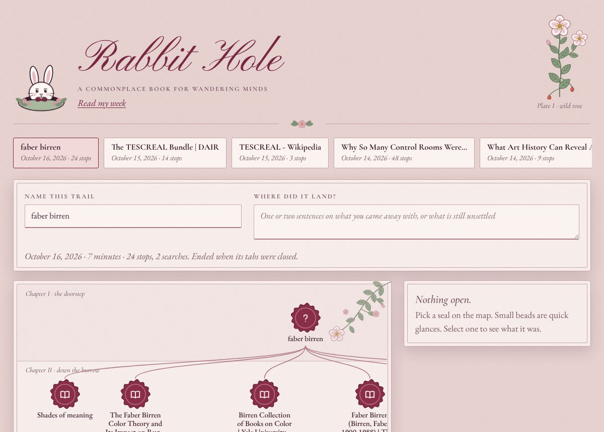
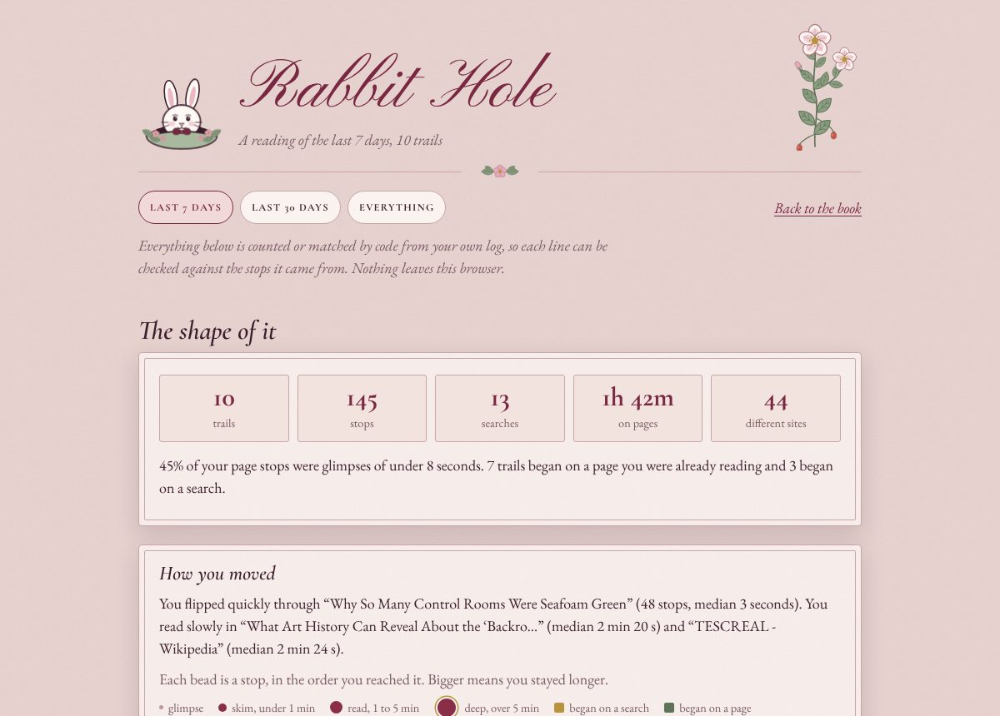

A Chrome extension that follows one curiosity trail at a time, draws it as a map, and reads back what kept returning. Two examples of its output follow.
Sample data: the real pages running on ten trails through public pages. This is not a live extension, and nothing here reads your browsing.

One trail drawn as a map. Each seal is a page, each thread a click, and the chapters mark how far down you went.
Open the book
What came back across trails: returning words, things you saw and then searched for, sittings, and loose ends. Counted by code, with no AI.
Read the sample week